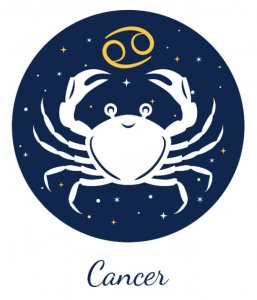

←
CANCER AND SAGITTARIUS COMPATIBILITY-



Cancer and Sagittarius Nature and Nuances:
Communication :
Pros of the Cancer and Sagittarius Relationship:
Sagittarius is a Mutable sign, while Cancer has an extremely giving personality. Hence, when these two individuals try to build a romantic association together, they will not be afraid to adjust and compromise anywhere along the way. This will give the must-needed elasticity to their equation and it will make it easier for them to build a strong sense of mutual understanding.
The coziness that Cancer brings to their home makes the Sagittarius sun sign natives feel comfortable, cherished, and cared for. On the other hand, the optimism and energy in the Archer’s behaviour infuses positivity and self-assurance in the Crab’s personality.
Sagittarius is an expressive sign while Cancer is known for its extensive emotional spectrum. Thus, they form a strong bond with each other, one that is built on honest communication and open expression of feelings.
Cons of the Cancer and Sagittarius Relationship
Cancer has domineering qualities somewhere in its personalities and thus, will want to take control inside the house. While that is fine with the Archer for most part, it will turn into frustration for him/her if it goes beyond the threshold.
Sagittarius turns reckless and irresponsible from time to time. That will irritate the Crab endlessly and cause serious friction between the two sides. Moreover, the emotional dependency of the Cancer sun sign might just be too much for the independent Sagittarius to take, especially at all times.
Arguments between the two signs as per Vedic astrology will be fiery and tempestuous, as both the parties flow off the handle in a disagreement and fail to see reason after they have given in to anger.
Love :
The compatibility between a Cancer man and Sagittarius woman is both strong and weak at the same time. The fate of their relationship depends very much on when and how they meet each other and also on their maturity and understanding levels during that time. It is an intriguing match that can either be too good for both the parties at one hand or an awkward combination of two unequal energies.
Cancer’s loving nature makes the Archer feel cherished in the star sign relationship compatibility. On the other hand, the strong personality of the Sagittarius star sign natives is exactly what the astrologer would order for the compassionate soul of the Cancer zodiac natives.
Furthermore, the combination of the Sagittarius man and Cancer woman also has the potential to wreck havoc in each other lives and yet, it can also turn into a remarkable and beautiful story of companionship.
Compatibility:
Cancer zodiac sign is an extremely affectionate caring, and emotional sign. Those born under it are drawn towards a stable, comfortable, and happy home life. They are dedicated to their families and will do everything in their power to bring a smile on the face of their loved ones. They are ardent lovers and loyal to a fault.
Sagittarius is the biggest adventure-seeker of the zodiac. Sagittarius love new experiences and are thus avid travelers, spontaneous voyagers, and probable foodies. They are extremely social and love being in the company of other people. They also have a softer side, in which the supportive and faithful qualities of their personality are displayed.
- Sagittarius is a Mutable sign, while Cancer has an extremely giving personality. Hence, when these two individuals try to build a romantic association together, they will not be afraid to adjust and compromise anywhere along the way. This will give the must-needed elasticity to their equation and it will make it easier for them to build a strong sense of mutual understanding.
The coziness that Cancer brings to their home makes the Sagittarius sun sign natives feel comfortable, cherished, and cared for. On the other hand, the optimism and energy in the Archer’s behaviour infuses positivity and self-assurance in the Crab’s personality.
Sagittarius is an expressive sign while Cancer is known for its extensive emotional spectrum. Thus, they form a strong bond with each other, one that is built on honest communication and open expression of feelings.